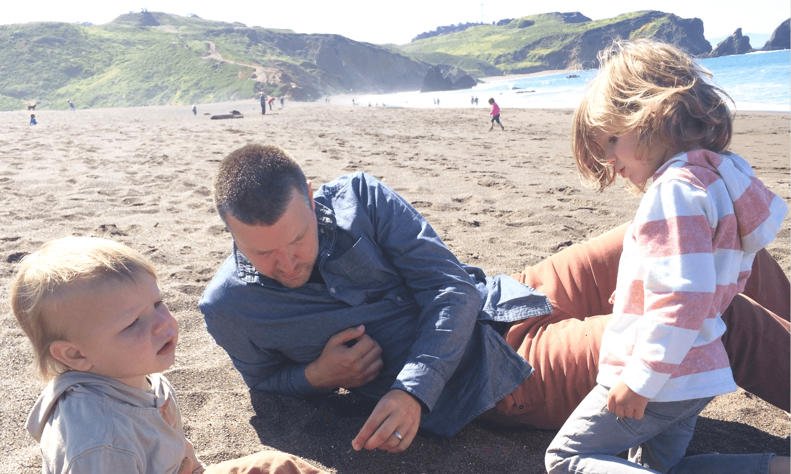

<section>
  <div class="row">

    <article>
      <figure class="pull">
        
      </figure>
      <p>That's me with my sons - I'm a Designer and a bit of a computer hippie.</p>
      <p>I'm a Product Designer at <a href="http://www.earnest.com">Earnest</a> in San Francisco, a fellow at <a href="http://www.ideocolab.com/team">IDEO CoLab</a>, and a <a href="https://designerfund.com/bridge/">Bridge</a> alumni. I find profound joy in amplifying human abilities with computers; the fidelity of my work is always in flux (I write lots of code<small><sup>1</sup></small>).</p>
      <p>Recently I was on an episode of <a href="https://spec.fm/podcasts/design-details/47795">Design Details</a> - they are awesome, inclusive people. I have a software <a href="http://patft.uspto.gov/netacgi/nph-Parser?Sect1=PTO2&Sect2=HITOFF&u=%2Fnetahtml%2FPTO%2Fsearch-adv.htm&r=1&p=1&f=G&l=50&d=PTXT&S1=9299027&OS=9299027&RS=9299027">patent</a> related to mobile location (spoiler alert, it is a boring read). I practice mindfulness <a href="http://www.10percenthappier.com/">meditation</a> daily on the OX bus. If you want to know more feel free to <a href="mailto:lucas@volanstudio.com">get in touch</a>.</p>
      <p><small><sup>1</sup>I have a <a href="http://compsci.cofc.edu/undergraduate-programs/computer-information-systems.php">degree in CS</a> and 13 years of professional experience as a designer.</small></p>
    </article>

  </div>
</section>
